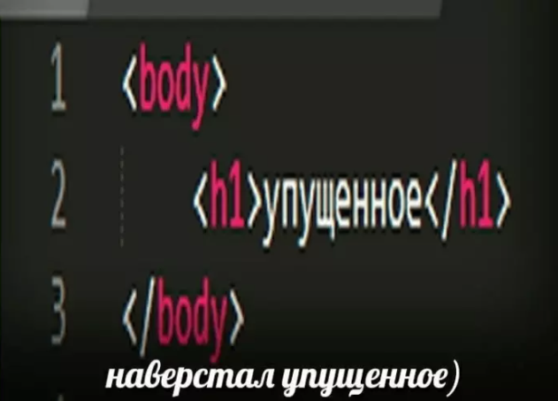
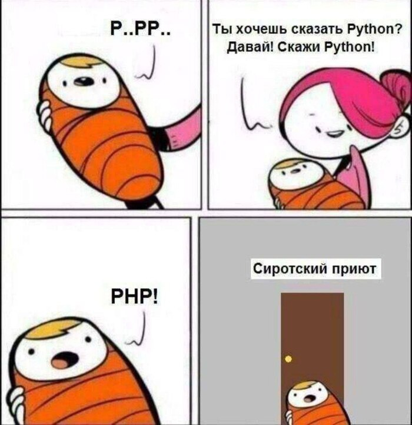

CSS Bayan
О насущном
Created by potrace 1.15, written by Peter Selinger 2001-2017
С меня хватит
Created by potrace 1.15, written by Peter Selinger 2001-2017
Тимлид в зуме
Created by potrace 1.15, written by Peter Selinger 2001-2017
Наверстал упущенное
Created by potrace 1.15, written by Peter Selinger 2001-2017

Простите))
Created by potrace 1.15, written by Peter Selinger 2001-2017
